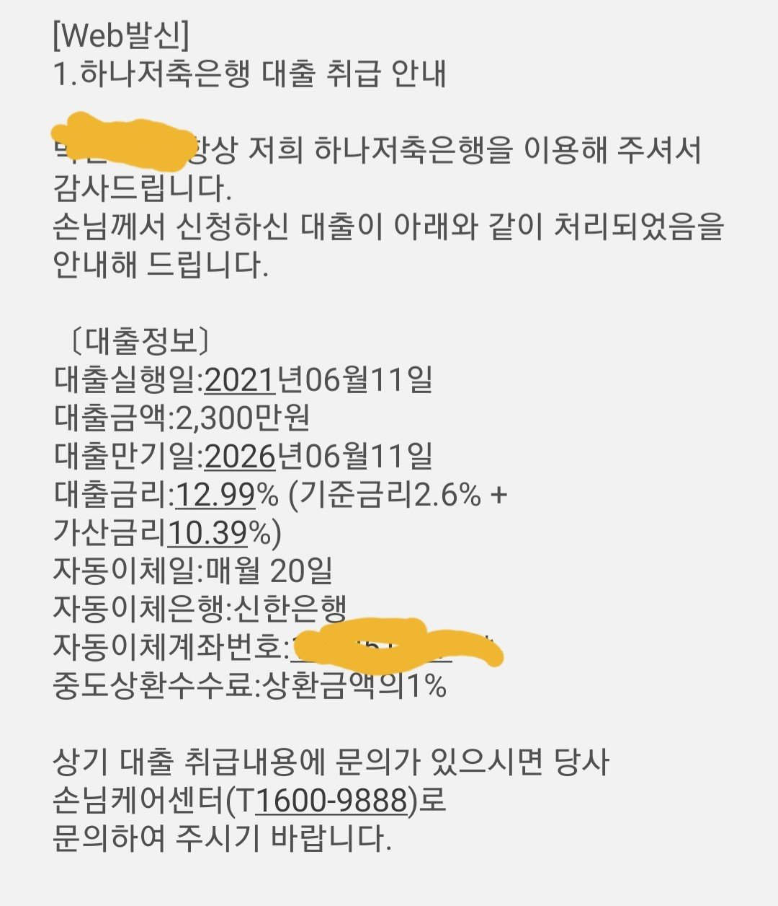

김용혁이사님 감사합니다
직장인
자격득실 5개월차 일용직
연소득 4500만원
기대출 카드론 3군데 4000만원 정도
현금서비스 300만원 정도
카카오뱅크 550만
저축은행850만
신랑 내역이예요 신랑 기존 대출이 카드론쪽이 3군데 너무 많다보니 매달 현금서비스를 받을수
밖에 없었어요 그래서 대출을 좀 받아서 현금 서비스랑 흩어져있는 카드론등을 정리하고
싶었습니다.
신랑이 이번에 공사관련부분으로 잠시 의료보험을 옮긴 상태라서 자격득실 기간이 짧은데다 일용직으로 올라가 있어서 대출이 힘든 상태 였는데
제가 회원으로 되어있던 뱅크론 소개를 해줬더니
신랑이 이번에 김용혁 이사님 도움으로
카드론보다 훨씬 낮은 금리로 대출받아 현금서비스랑 카드론을 일부정리하게 되었습니다.
매달 납입금이 줄어들면서 이제 가게재무에
숨통이 좀 트이네요 ~ 감사합니다
